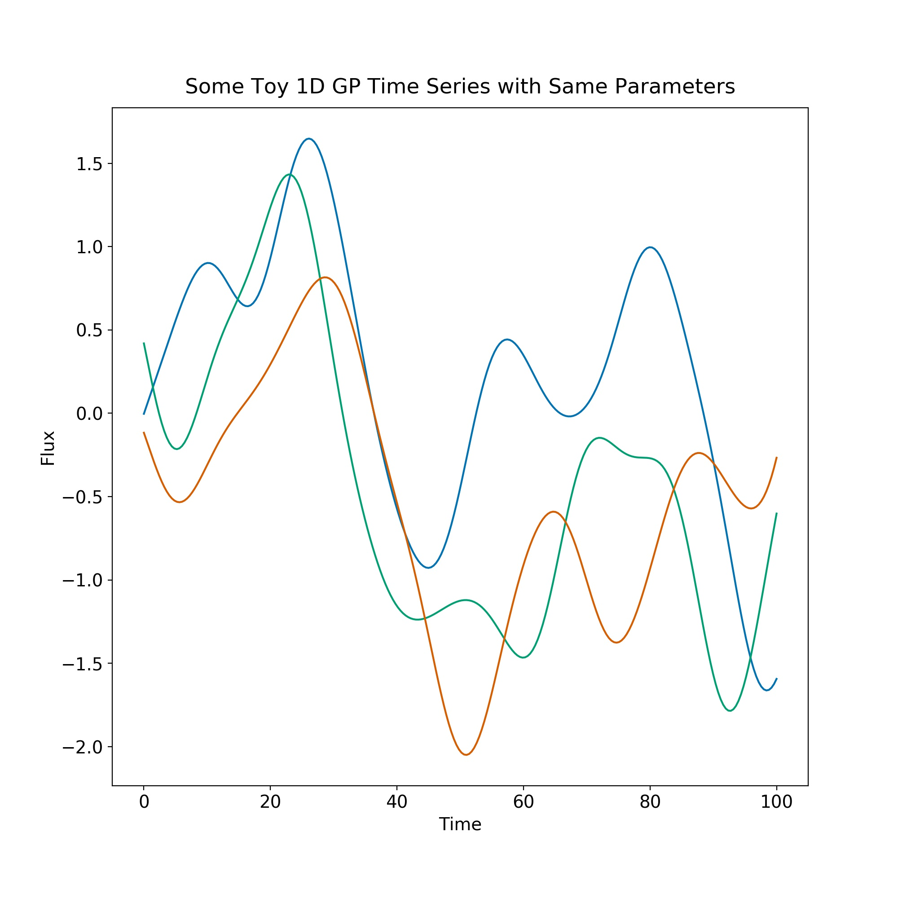
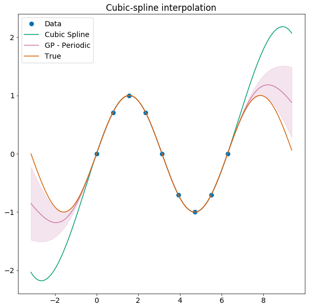
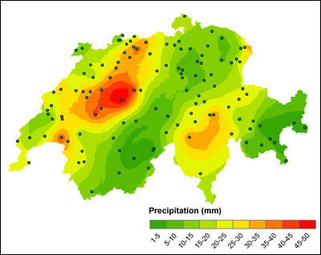
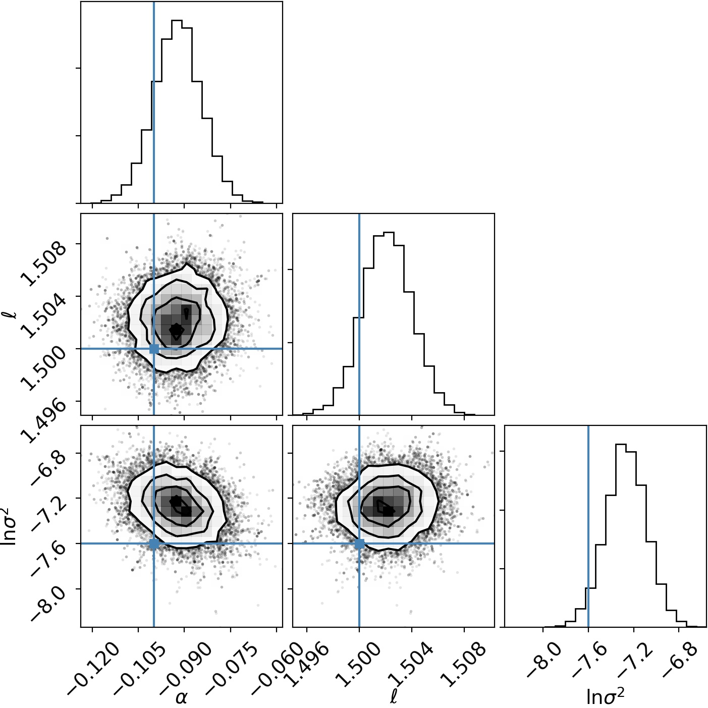
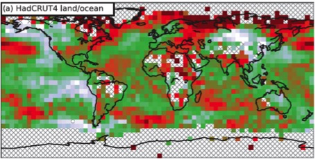

Gaussian Processes
for the General Practitioner
Benjamin Pope
Interpolation
Interpolating with splines
Splines are a common piece-wise polynomial model, anchored at a finite set of points, used for interpolation.

Gaussian Processes

Hippocrates: 'First, do no harm'.
A Gaussian Process is a distribution over functions such that any finite set of samples are jointly Gaussian-distributed.
These are sometimes also referred to as Gaussian random fields.
You specify a mean function \[\mu(\mathbf{x},\mathbf{\theta}_\mu) \] which defines a deterministic, parametric model (e.g. the orbit of a planet)...
and a covariance function \[\mathbf{K}(\mathbf{x}_1, \mathbf{x_2}, \mathbf{\theta}_K) \] which generates random variations, such as stellar activity.
In general you will want your covariance function to simply be a 'kernel' \[\mathbf{K}(x_1,x_2) = k(|\mathbf{x}_1 - \mathbf{x}_2|, \mathbf{\theta}_K) \]
which we see depends only on the distance between your input data.
Any zero-mean GP/Gaussian Random Field is fully characterized by its power spectral density (PSD), or equivalently, its covariance function.
These are interchangeable because of the Wiener-Khinchine theorem, which states that these are related by a Fourier transform.
\[ \underbrace{f\star f}_{\text{autocorrelation}} = FT(|f|^2) \]
These can be simple 1D functions, like here where \(k(\Delta t) = \exp(-{\Delta t}/\tau)^2 \)
\[ E(k) \propto k^{-5/3} \]

You can use GPs to interpolate conservatively!
... and work better if you optimize the kernel.

History
This has also been used in meteorology, to interpolate between a few weather stations across a wide region (eg Switzerland below)
So how does it work?
Information about \(x_1\) tells you more about \(x_2\) than just the marginal distribution - because they are correlated, learning \(x_1\) allows you to predict \(x_2\) more accurately.
In using a GP we exploit this by knowing the correlations across, say, a whole time series or spatial map.
This is characterized by a covariance matrix like this, for squared exponential correlation with \(\lambda = 100\).

Remarkably, the posterior for a GP conditioned upon data \(\mathbf{x}_* \) is also a GP, and has an analytic distribution
\[ p(\mathbf{y}*) = \mathscr{N}(\mathbf{m}_*, \mathbf{C}_*),\]
where \[ \mathbf{m}_* = \mathbf{\mu}(\mathbf{x}_*) + \mathbf{K}(\mathbf{x}_*, \mathbf{x})\mathbf{K}(\mathbf{x}, \mathbf{x})^{-1} (\mathbf{y}(\mathbf{x}) - \mathbf{\mu}(\mathbf{x})) \]
and
\[ \mathbf{C}_* = \mathbf{K}(\mathbf{x}_*,\mathbf{x}_*) -\mathbf{K}(\mathbf{x}_*,\mathbf{x})\mathbf{K}(\mathbf{x},\mathbf{x})^{-1}\mathbf{K}(\mathbf{x}_*,\mathbf{x})^T.
\]
Implementing a GP
1. Choose your mean function \(\mu(\mathbf{x},\mathbf{\theta}_\mu)\) and kernel \(k(\mathbf{x},\mathbf{\theta}_k)\) appropriate to the problem.
2. Fit your kernel hyperparameters \(\mathbf{\theta}_k\). This is usually too expensive to jointly fit with your deterministic model.
3. Compute your GP covariance matrix. This is now just a familiar \(\chi^2\) problem.
4. MCMC to get posteriors for the parameters \(\mathbf{\theta}_\mu\).
Choosing your kernel
Your kernel can be thought of as matching the impulse response function of a linear system. So for a driven, damped harmonic oscillator, the kernel is
\[ k(\Delta t) = A_0 \cdot \exp{(-\dfrac{\Delta t}{\tau})} \cos(\omega \Delta t) \]
Let's look at some draws from this distribution.

There are many kernels for different tasks, and I will not cover them all here. For example, there is the Matern-3/2 kernel
\[k(r^2) = (1+\sqrt{3r^2}) \exp(-\sqrt{3} r^2) \]
which is good for rough or jagged processes.
Or there is the Exponential Sine Squared kernel
\[k(x_i,x_j) = \exp(-\Gamma \sin^2{(\dfrac{\pi}{P} |x_j - x_i|)})\]
which is good for periodic processes which 'lose memory' at a rate determined by \(\Gamma\).
Often you will want to represent white noise as a diagonal term in your covariance matrix, so that
\[\mathbf{K} = \mathbf{K}_0 + \sigma^2 \mathbf{I}. \]
This white noise parameter \(\sigma\) allows you to account for uncorrelated errors safely.
Hyperparameters
The parameters \( \tau, P, \Gamma, \nu\) et cetera above are called hyperparameters.
While GPs are non-parametric models, the general information such as length scale, period, amplitude and so forth that controls a GP is determined by these hyperparameters. In general, you will want to optimize these to get the best possible fit to your data.
Conveniently, the GP has an analytic marginal likelihood!
\[ \log p(\mathbf{y}|\mathbf{x},\mathbf{\theta},I) = -\underbrace{\dfrac{1}{2} \mathbf{y}^T (\mathbf{K}+\sigma^2 \mathbf{I})^{-1} \mathbf{y}}_{\text{data fit}}\]
\[-\underbrace{\dfrac{1}{2} \log(\det(\mathbf{K}+\sigma^2 \mathbf{I}))}_{\text{complexity penalty}} - \underbrace{\dfrac{n}{2}\log(2\pi)}_{\text{constant}]\]
In practice the determinant and matrix inversion are what kills you, as these scale as \( \mathscr{O}(3)\) with the number of data points \( n\) - brutal!
It is very often the case that most of the ingenuity in a GP software package is in implementing a clever matrix decomposition such as the HODLR or Cholesky decompositions, which are beyond my mortal ken.
Examples
Spectral Line
A Test Case
Remember the mean function? We can use a GP to account for correlated noise.
You jointly fit the mean parameters \(\mathbf{\theta}_\mu\) and the stochastic parameters \(\mathbf{\theta}_K\) with, say, MCMC or nested sampling.
We have generated data with a real spectral line at 1.5 GHz, with depth 0.1, and \(\log(\sigma^2) =0.0005 \), buried in correlated noise from a GP with a squared-exponential kernel, \(\lambda=0.5\), amplitude 0.1.

Using emcee, an affine-invariant MCMC sampler, we fit the GP hyperparameters jointly with our Gaussian line model.

We can subtract the best model fit out to see how well the GP models the noise:

And we can make a corner plot to show the marginal distribution we get for the model parameters. We nail it pretty well in some tough noise!
Asteroseismology
In asteroseismology, a star rings like a bell and its frequencies tell us important information about the stellar interior.
For solar-like stars driven by convective noise, the signal should reduce to a sum of simple harmonic oscillator Gaussian Processes. \[ k(\Delta t) = A_0 \cdot \exp{(-\dfrac{\Delta t}{\tau})} \cos(\omega \Delta t) \]

Multiple Inputs and Outputs
A GP kernel can depend on several different inputs (eg position and time), and a GP can output a vector-valued function.
Searching for Exoplanets
Exoplanets are detectable by the dip they cause in brightness as they pass in front of a star...
... but the instrument is not perfect, and stars can vary for other reasons!
Exoplanet-style transit light curve of Venus from James Gilbert on Vimeo.
Raw K2 Data
So we model this as a 2D GP: with a squared exponential kernel in both time and in the spacecraft roll angle.
We calibrate out the error introduced by roll by then predicting the GP at each roll angle, with time set to zero - and subtract this purely-roll systematic from the real data.

A planet - EPIC 212357477 b


Roberts et al., 2012 want to infer \(\mathbf{\theta}_\mu\) (orbital parameters, planet radius, etc) and marginalize over instrumental systematics as nuisance parameters.
Traps
Cowtan & Way (2013) realised that there was very poor coverage of temperature maps near the poles – only 84% global coverage.
If you use a GP to try and fill in the gaps, you find there has been a bias to estimating lower global warming than previously thought.
The issue is that the poles have very different physics to the equator and you can't interpolate one over the other - GPs model stationary processes!
Conclusions
Gaussian processes are awesome, and you should use them for statistically-robust non-parametric modelling.
For further reading, I recommend
Books
David Mackay, Information, Inference and Learning Algorithms, available free online;
Rasmussen and Williams, Gaussian Processes for Machine Learning, also free online;
Paper
Roberts et al., Gaussian Processes for Time Series Modelling